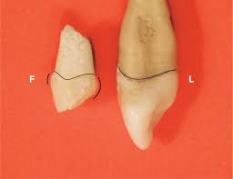

All teeth
- Cervical line is convex root-wise facially and lingually
- Cervical line is convex crown-wise proximally and shallower distally
- Facial and lingual geometric outlines are trapezoid in shape with the shortest side cervically
- Elevations are more developed in upper teeth than lower teeth
- Distal contact area is more cervically located than the mesial one
- Mesial cusp slope is shorter than the distal one
- Root curves distally with a pointed apex Exceptions will be highlighted.
Anterior Teeth
- Proximal geometric outlines are triangular with the base cervically
- Formed of 4 lobes: 3 labially and 1 lingually
- Maximum convexity at the cervical ridge labially
- Contain shallow deveopmental grooves labially that separates lobes
Maxillary Incisors
- Masticatory geometric outline is triangular with the base labially
- Width (MD) is greater than thickness (FL)
Upper central incisor
Characteristics and Exceptions:
- Widest tooth mesiodistally
- Root is centralizied with a blunt apex
- Eruption: 7-8 years, root completion: 10 years
- Contact area: mesially at incisal third
- Mesio-incisal angle is sharp while distal is rounded
More info
Upper lateral incisor

Characteristics and Exceptions:
- Has the greatest variation in shape
- Lingual palatal pit could be found
- Eruption:8-9 years, root completion: 11 years
- Contact area: mesially at the junction of incisal and middle thirds
- Mesio-incisalangle is rounded and distal is more rounded
- Longer root than the upper central incisor
More info
Mandibular Incisors
- Masticatory geometric outline is diamond
- Thickness (FL) is greater than width (MD)
- Incisal ridges are inclined lingually
- Shallow lingual fossae
- Pulp chamber is narrower MD than FL
Lower central incisor
Characteristics and Exceptions:
- The most symmetrical tooth
- Eruption:6 years, root completion: 9 years
- Smallest tooth in permanent dentition
- Contact areas: mesially and distally are at the same level at incisal third
- Both incisal angles are sharp
- The incisal ridge is at a right angle
More info.
Lower lateral incisor
Characteristics and Exceptions:
- Cingulum is shifted distally
- Eruption:7 years, root completion: 10 years
- Larger than the lower central incisor
- Contact areas: mesially at incisal third
- Mesio-incisal angle is sharp while distal is rounded
- Incisal ridge is inclined lingually and distally, called a twist, following the curve of the dental arch
More info.
Canines
- Called cuspids (one cusp)
- Masticatory geometric outline is diamond
- Thickness (FL) is greater than width (MD)
Upper canine
Characteristics and Exceptions:
- Has 2 lingual fossa
- Eruption:11 years, root completion: 14 years
- Contact areas: mesially at the junction of incisal and middle thirds
- Cusp tip maybe centralized or inclined labially
More info.
Lower canine
Characteristics and Exceptions:
- Can have 2 roots
- Has 1 lingual fossa
- Eruption: 9 years, root completion: 11 years
- Contact areas: mesially at incisal third
- Cusp tip maybe centralized or inclined lingually
More info.
Posterior Teeth
- Buccal root is longer and wider in case of two roots
Maxillary premolars
- Thickness (FL) is greater than width (MD)
- Proximal geometric outline is trapezoid with the shortest side occlusally
Upper first premolar
Characteristics and Exceptions:
- Has mesial marginal developmental groove
- Buccal mesial slope is longer than the distal slope
- Has a canine fossa
- Distal marginal ridge is more occlusal than mesial marginal ridge
- Eruption: 10-11 years, root completion: 12-13 years
- Contact area: mesially at middle third while distally more occlusally positioned
- Has wide occlusal table
- Hexagonal geometric outline of the occlusal
- Long central developmental groove
- has 2 roots (80% chance, 20% chance of 1 root)
More info.
Upper second premolar
Characteristics and Exceptions:
- Eruption:10-12 years, root completion: 12-14 years
- Contact area: mesially at occlusal third
- Has narrow occlusal table
- Oval geometric outline of the occlusal
- Short central developmental groove
- Has 1 root, rare to have 2
- Has thicker marginal ridges than upper first premolar
More info.
Mandibular premolars
- Proximal geometric outline is rhomboid
- Contain transverse ridges
Lower first premolar
Characteristics and Exceptions:
- Snake eyes occlusal
- Has mesiolingual developmental groove
- Lingual inclination is well prominent
- Narrow occlusal table
- Eruption:10-12 years, root completion: 12-13 years
- Contact area: Almost at the same level at junction of occusal and middle thirds
- Lingual maximum convexity is at the middle third
- Lingual cusp is 2/3 thirds of the crown length
- Occlusal geometric outline is diamond
- Lingual convergence is sharp
- Mesial marginal ridge is oblique while the distalis straight
More info.
Lower second premolar
Characteristics and Exceptions:
- Root is centralized with a blunt apex
- 2 cusp type with oval/rounded occlusal geometric , U or H central developmental groove
- 3 cusp type with square geometric outline, causing no lingual convergency, Y central developmental groove
- narrow occlusal table
- Eruption: 11-12 years, root completion: 13-14 years
- Mesial and distal marginal ridges are straight